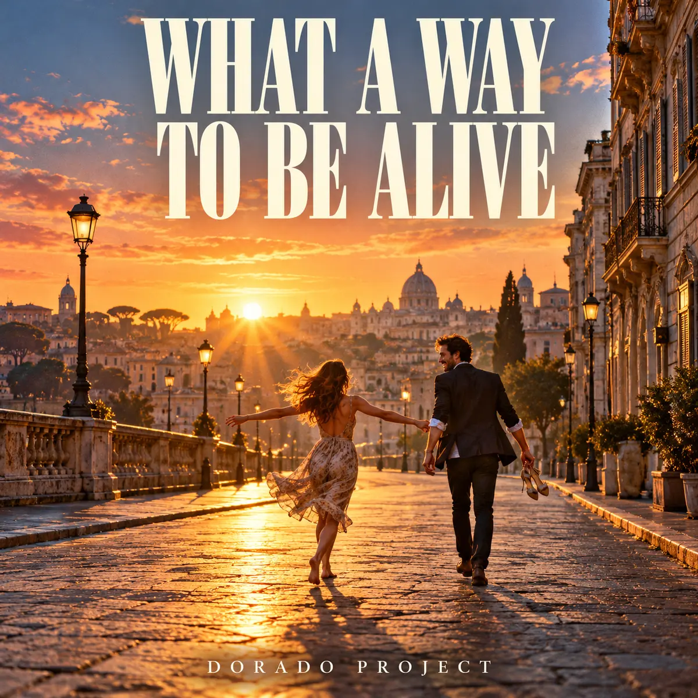

← All releases

NEW SINGLE · IN DEVELOPMENT
What a Way to Be Alive
Alternative rock / Stadium rock
What a Way to Be Alive by Dorado Project: an uplifting English-language alternative stadium rock song about a spontaneous night, romance and staying out until sunrise.
Spotify link to follow when the track is available.
One drink, one song, a whole night
A kitchen radio cuts out, but two people keep singing. One drink becomes a whole night; a missed train becomes a slow walk home, shoes in hand and morning light on their faces. What a Way to Be Alive celebrates those unplanned moments you want to keep for the rest of your life. Its central line says it simply: We came for a drink, stayed for the sunrise. The song is written for bright interlocking guitars, driving bass, live drums, a warm gritty male voice and a soaring communal chorus. A melodic guitar break leads into the final chorus before a gradual fade-out. The golden city sunrise on the cover captures that same feeling of freedom, affection and shared joy.
More from Dorado Project
From synthpop to rock: explore more tracks and the story behind Dorado Project.
Explore all tracks →